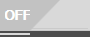
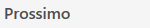
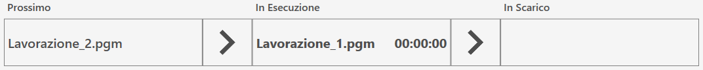
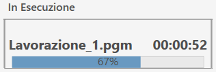
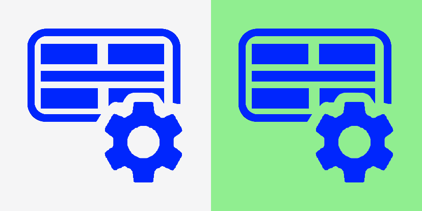
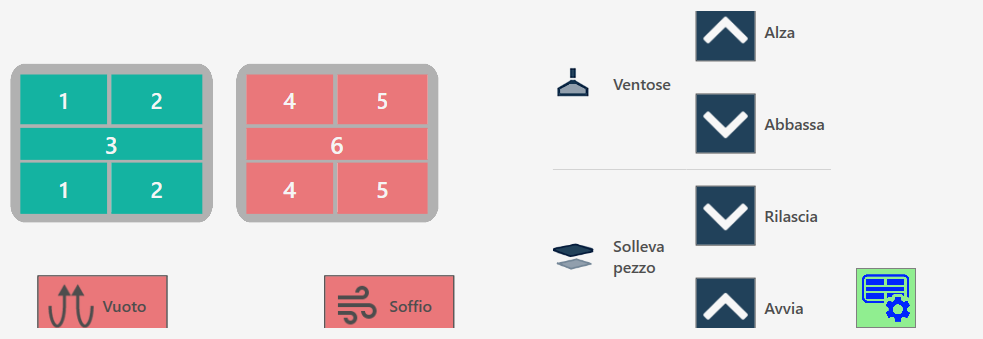
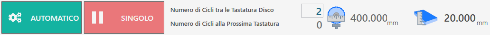
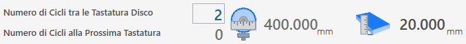
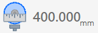

The page ISO file programming list allows to execute more programs consecutively, created previously through CAD-CAM programs, for machines with two working areas, Twin machines or programs with more workings created when the machine is already in operation.

Top bar
In the upper bar are reported monitoring information of the progress status of the list

  | Activation/Deactivation ISO Program List |
 | Execution state of the list |
   | List progress bar |
Progress bar of the list
This progress bar provides information on the execution status of the ongoing ISO program, while also offering a general overview on the next program in list and on the one that has already completed the processing phase and has passed to the unloading.

In the previous image, no program is yet visible in the downloading phase, because the execution of the list has not been started and no piece has yet been processed. Conversely, if there is only one ISO file in the list or the processing has been started and all other files have already been executed, the Next section will be empty.
During execution, it will be visible in real time the progress state of the program, as illustrated below.

Side menu
On the right side of the vacuum panel are some buttons related to the management of individual files in the programs list.
 | Run next program |
 | Move selected element higher |
 | Move selected element lower |
 | Delete selected element |
 | Suction cups panel |
Suction cups Panel
Is possible to use the vacuum cups to move pieces from one work zone to the other.

Suction cups buttons
 | Enable / disable suction cups |
 | SUCTION CUPS: UP - Vacuum parking |
VENTOSE: LOWER - Prepare suction cups | |
 | RAISES PIECE: RELEASE - Download piece |
RAISES PIECE: START - Piece lifting | |
  | BLOW - Command Blow |
Vacuum - Command vacuum pump |
Safety conditions
Pay particular attention to the active suction cups during the lifting, making sure that the areas used are sufficient to lift the piece of movement. Try to always use the largest area of vacuum available to take the piece and check that there are no defects and breaks on the material that can create dangers or problems to the operation of the machine.
Once the vacuum pump is on, its shutdown is allowed only through the automatic functions provided for this purpose. The reset button or emergency mushroom pressure has no effect on the vacuum pump which will continue to function. The pump can be forcibly switched off by the appropriate button within the 'Additional Commands' page.
In automatic procedures, before performing the piece lifting, the vacuum status is checked through a specific sensor: if a sufficient vacuum value is not detected, the ""vacuum failure"" alarm appears. The pump will continue to remain active until the vacuum switch detects a correct value, or if it will be disabled from the ""Additional Commands"" page.
WARNING!The lack of feeding to the vacuum pump involves a fast loss of the same and the consequent fall of the material lifted with the vacuum cups.
Lower bar
In the lower part of the bar are visible some functionalities related to the execution of the ISO program list, as well as the monitoring of both the tool and the slab.

Execution List Management
In the lower part we find also the two buttons relative to the execution modes of the programs:
 | Manual / automatic |
  | Single / Next Automatic |
Slab and tool monitoring
In the center and on the right of the lower bar, the operator can configure periodic monitoring of the tool diameter, setting checks at intervals defined based on the number of cycles performed.

 | Number of Cycles Between Disks' Probes |
|---|---|
 | Number of Cycles To The Next Probe |
 | Tool diameter |
 | Slab thickness |
ISO Program List Execution
If the ISO Program List is disabled, the switch in the upper right corner of the panel will appear off; it will then be possible to enable the functionality simply by clicking this button.
The ISO program list is automatically expanded as ISO are generated in Parametrix, in any case the operator can reposition elements within the list or remove them from it according to their needs.
Before proceed with the execution of the list, the operator has the possibility to set the number of cycles that will be performed among the keyboard operations of the tool.
Then the number of cycles remaining to the next probe will be updated and visible.
The operator starts the execution of the program list by pressing the 'Start cycle' button. In this way, the programs are executed in sequence, with simultaneous viewing of the program in progress, the one that will be executed subsequently and the one already completed.
If the execution mode of the programs is set to Manual and Single, the execution of the list will be interrupted at the end of the running program, right after having prepared the next program to execute.
In such case, the operator has the possibility to press the Next button when he deems it more appropriate and proceed with the execution by pressing again the 'Start Cycle' button.